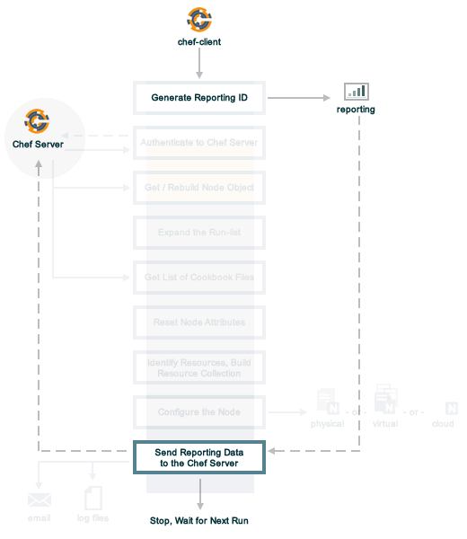

Reporting

Use Reporting to keep track of what happens during the execution of chef-client runs across all of the machines that are under management by Chef. Reports can be generated for the entire organization and they can be generated for specific nodes.
Reporting data is collected during the chef-client run and the results are posted to the Chef server at the end of the chef-client run at the same time the node object is uploaded to the Chef server.
Note
This feature is included as part of the Chef Automate license agreement and is available via subscription.
Requirements
Reporting has the following minimum requirements:
- Chef server 12
- chef-client version 11.6.0 (or later)
Reporting can make use of an external database, but to do so Reporting 1.5.5 or later is needed along with Chef server 12.2.0 or later.
The Reporting client is built into the chef-client and can run on all platforms that chef-client is supported on.
Warning
Reporting does not work on chef-client version 11.8.0; upgrade to chef-client version 11.8.2 (or later) if Reporting is being run in your organization.
Warning
The only supported versions of Reporting are 1.5.5 or later.
Reporting is configured as a premium feature of the Chef server and requires acceptance of the Chef MLSA as part of the installation process, starting with version 1.6.0.
The Reporting Run
A “chef-client run” is the term used to describe a series of steps that are taken by the chef-client when it is configuring a node. Reporting, when configured, is also tracked during the chef-client run. The following diagram shows how Reporting fits into the chef-client run, and then the list below the diagram describes in greater detail each of those stages.
When reports are generated as part of a chef-client run, in addition to what normally occurs during the chef-client run, the following happens:
| Stages | Description |
|---|---|
| Generate reporting ID | At the beginning of the chef-client run, the chef-client pings Reporting to notify it that a chef-client run is starting and to generate a unique identifier for the chef-client run so that it can be associated with the reporting data. |
| Send the reporting data to the Chef server | At the end of the chef-client run, the chef-client pings Reporting, and then sends the data that was collected during the chef-client run to the Chef server so that it can be added to the Reporting database. |
Chef Manage, Reports
The Chef management console enables the management of nodes, data bags, roles, environments, and cookbooks by using a web user interface. In addition, access to nodes, data bags, roles, environments, and cookbooks is configurable using role-based access control (RBAC).
When Reporting and Chef management console are both added to the Chef server, a user interface for Reporting is also available.

Knife Reporting
The knife reporting subcommand is used by Reporting to report about chef-client runs across the organization.
Note
Review the list of common options available to this (and all) knife subcommands and plugins.
Install the Plugin
To install the knife reporting plugin using RubyGems, run the following command:
$ /opt/chef/embedded/bin/gem install knife-reporting
where /opt/chef/embedded/bin/ is the path to the location where the chef-client expects knife plugins to be located. If the chef-client was installed using RubyGems, omit the path in the previous example.
runs list
Use the runs list argument to return a list of chef-client runs by organization or by node.
Options
This argument has the following options:
- -e MM-DD-YYYY, --endtime MM-DD-YYYY
- Find runs with an end time less than or equal to the specified date. This option must be used in conjunction with --starttime and may define up to a 90-day time period.
- RUN_ID
- Required. The identifier for a chef-client run.
- -r N, --rows N
- The number of rows to be returned.
- -s MM-DD-YYYY, --starttime MM-DD-YYYY
- Find runs with a start time greater than or equal to the specified date. This option must be used in conjunction with --endtime and may define up to a 90-day time period.
- -u, --unixtimestamps
- Show start and end times as UNIX timestamps. This option may be used when the --endtime and --starttime options are used.
Examples
View all chef-client runs for an organization
To return a list of chef-client runs by organization (i.e. “every chef-client run that took place across every single node in the organization”), run the following command:
$ knife runs list
View all chef-client runs for a single node
To return a list of chef-client runs that occurred for a node, run the following command:
$ knife runs list node_name
where node_name is the name of a node.
View a specific chef-client run
To return a list of chef-client runs that occurred for a specific node, run the following command:
$ knife runs list node_name 30077269-59d0-4283-81f6-8d23cbed3a7a
where node_name is the name of a node.
runs show
Use the runs show argument to return the details for a chef-client run (by run identifier).
Examples
Show runs by run identifier
To return details about a specific chef-client run, run the following command:
$ knife runs show c40csdcf2-5007-433c-95570-8e0c7e55f496
For a chef-client run that succeeded, the command will return something similar to:
$ run_detail:
data:
end_time: 2013-12-10T17:18:49Z
node_name: kitchen-vagrant
run_id: c40csdcf2-5007-433c-95570-8e0c7e55f496
run_list: ["recipe[createfile]"]
start_time: 2013-12-10T17:18:49Z
status: success
total_res_count: 1
updated_res_count: 1
run_resources:
cookbook_name: createfile
cookbook_version: 0.0.0
duration: 41
final_state:
checksum: f29bc64a9d3123454gfdsffdb3285f5bsdfsdf72414671e0ca3b2e0de
group: root
mode: 0755
owner: root
id: /tmp/test
initial_state:
checksum:
group:
mode:
owner:
name: /tmp/test
result: touch
type: file
uri: URI
For a chef-client run that failed (or had some type of error), the command will return something similar to:
$ run_detail:
data:
exception:
backtrace: ["/opt/chef/embedded/lib/ruby/1.9.3/net/http.rb:763:in 'initialize'",
"/opt/chef/embedded/lib/ruby/1.9.3/net/http.rb:763:in 'open'",
"/opt/chef/embedded/lib/ruby/1.9.3/net/http.rb:763:in 'block in connect'",
"/opt/chef/embedded/lib/ruby/1.9.3/timeout.rb:55:in 'timeout'",
"/opt/chef/embedded/lib/ruby/1.9.3/timeout.rb:100:in 'timeout'",
"/opt/chef/embedded/lib/ruby/1.9.3/net/http.rb:763:in 'connect'",
"/opt/chef/embedded/lib/ruby/1.9.3/net/http.rb:756:in 'do_start'",
...
"/usr/bin/chef-client:23:in 'load'",
"/usr/bin/chef-client:23:in '<main>'"]
class: #<SocketError: Error connecting to URL - getaddrinfo: Temporary failure in name resolution>
description:
sections:
Networking Error:: Error connecting to URL - getaddrinfo: Temporary failure in name resolution
Your chef_server_url may be misconfigured, or the network could be down.
Relevant Config Settings:: chef_server_url "URL"
title: Error Syncing Cookbooks:
message: Error connecting to URL - getaddrinfo: Temporary failure in name resolution
end_time: 2013-12-10T14:38:18Z
node_name: node_name
run_id: c40csdcf2-5007-433c-95570-8e0c7e55f496
run_list: ["recipe[createfile]"]
start_time: 2013-12-10T14:37:37Z
status: failure
total_res_count: 0
updated_res_count: 0
run_resources:
state_attrs Method
The state_attrs method is used to define the properties that will be tracked by the Reporting server. In general, this should be a list of properties that describe the desired state of the system, such as file permissions, cloud provider data (like snapshots, volumes, identifiers, sizes, and access keys), and so on.
The syntax for the state_attrs method is as follows:
state_attrs :property,
:property,
:property
where :property is a comma-delimited list of properties. For example, the ebs_volume resource (available from the aws cookbook) uses the state_attrs method to tell the Reporting server to track the following properties:
state_attrs :availability_zone,
:aws_access_key,
:description,
:device,
:most_recent_snapshot,
:piops,
:size,
:snapshot_id,
:snapshots_to_keep,
:timeout,
:volume_id,
:volume_type
Configuration Settings
Reporting relies on two settings in the client.rb file:
| Setting | Description |
|---|---|
| enable_reporting | Cause the chef-client to send data to the Chef server for use with Reporting. For example: enable_reporting true
|
| enable_reporting_url_fatals | Cause the chef-client run to fail when Reporting data cannot be sent to the Chef server (for any reason). For example: enable_reporting_url_fatals false
|
Reporting API
The Reporting API is a REST API that provides access to Reporting data that is collected during a chef-client run. Reporting data is collected only for nodes that have permission to publish Reporting data to the Chef server and only for organizations that have Reporting enabled.
Requirements
The Chef server API has the following requirements:
- Access to a Chef server running version 0.10.x or above
- The Accept header must be set to application/json
- For PUT and POST requests, the Content-Type header must be set to application/json
- The X-Chef-Version header must be set to the version of the Chef server API that is being used
- A request must be signed using Mixlib::Authentication
- A request must be well-formatted. The easiest way to ensure a well-formatted request is to use the Chef::REST library
Authentication Headers
Authentication to the Chef server occurs when a specific set of HTTP headers are signed using a private key that is associated with the machine from which the request is made. The request is authorized if the Chef server can verify the signature using the public key. Only authorized actions are allowed.
Note
Most authentication requests made to the Chef server are abstracted from the user. Such as when using knife or the Chef server user interface. In some cases, such as when using the knife exec subcommand, the authentication requests need to be made more explicitly, but still in a way that does not require authentication headers. In a few cases, such as when using arbitrary Ruby code or cURL, it may be necessary to include the full authentication header as part of the request to the Chef server.
Header Format
All hashing is done using SHA-1 and encoded in Base64. Base64 encoding should have line breaks every 60 characters. Each canonical header should be encoded in the following format:
Method:HTTP_METHOD
Hashed Path:HASHED_PATH
X-Ops-Content-Hash:HASHED_BODY
X-Ops-Timestamp:TIME
X-Ops-UserId:USERID
where:
- HTTP_METHOD is the method used in the API request (GET, POST, and so on)
- HASHED_PATH is the path of the request: /organizations/NAME/name_of_endpoint. The HASHED_PATH must be hashed using SHA-1 and encoded using Base64, must not have repeated forward slashes (/), must not end in a forward slash (unless the path is /), and must not include a query string.
- The private key must be an RSA key in the SSL .pem file format. This signature is then broken into character strings (of not more than 60 characters per line) and placed in the header.
The Chef server decrypts this header and ensures its content matches the content of the non-encrypted headers that were in the request. The timestamp of the message is checked to ensure the request was received within a reasonable amount of time. One approach generating the signed headers is to use mixlib-authentication, which is a class-based header signing authentication object similar to the one used by the chef-client.
Required Headers
The following authentication headers are required:
| Feature | Description |
|---|---|
| Accept | The format in which response data from the Chef server is provided. This header must be set to application/json. |
| Content-Type | The format in which data is sent to the Chef server. This header is required for PUT and POST requests and must be set to application/json. |
| Host | The host name (and port number) to which a request is sent. (Port number 80 does not need to be specified.) For example: api.opscode.com (which is the same as api.opscode.com:80) or api.opscode.com:443. |
| X-Chef-Version | The version of the chef-client executable from which a request is made. This header ensures that responses are in the correct format. For example: 12.0.2 or 11.16.x. |
| X-Ops-Authorization-N | One (or more) 60 character segments that comprise the canonical header. A canonical header is signed with the private key used by the client machine from which the request is sent, and is also encoded using Base64. If more than one segment is required, each should be named sequentially, e.g. X-Ops-Authorization-1, X-Ops-Authorization-2, X-Ops-Authorization-N, where N represents the integer used by the last header that is part of the request. |
| X-Ops-Content-Hash | The body of the request. The body should be hashed using SHA-1 and encoded using Base64. All hashing is done using SHA-1 and encoded in Base64. Base64 encoding should have line breaks every 60 characters. |
| X-Ops-Reporting-Protocol-Version | Use to specify the protocol version for the Reporting API. This header must be set to 0.1.0.
If the protocol version is incorrect (or unspecified), the chef-client run will proceed normally, but Reporting data will not be collected for that chef-client run unless the enable_reporting_url_fatals setting is true in the client.rb file for that node. |
| X-Ops-Sign | Set this header to the following value: version=1.0. |
| X-Ops-Timestamp | The timestamp, in ISO-8601 format and with UTC indicated by a trailing Z and separated by the character T. For example: 2013-03-10T14:14:44Z. |
| X-Ops-UserId | The name of the API client whose private key will be used to create the authorization header. |
Example
The following example shows an authentication request:
GET /organizations/NAME/nodes HTTP/1.1
Accept: application/json
Accept-Encoding: gzip;q=1.0,deflate;q=0.6,identity;q=0.3
X-Ops-Sign: algorithm=sha1;version=1.0;
X-Ops-Userid: user_id
X-Ops-Timestamp: 2014-12-12T17:13:28Z
X-Ops-Content-Hash: 2jmj7l5rfasfgSw0ygaVb/vlWAghYkK/YBwk=
X-Ops-Authorization-1: BE3NnBritishaf3ifuwLSPCCYasdfXaRN5oZb4c6hbW0aefI
X-Ops-Authorization-2: sL4j1qtEZzi/2WeF67UuytdsdfgbOc5CjgECQwqrym9gCUON
X-Ops-Authorization-3: yf0p7PrLRCNasdfaHhQ2LWSea+kTcu0dkasdfvaTghfCDC57
X-Ops-Authorization-4: 155i+ZlthfasfasdffukusbIUGBKUYFjhbvcds3k0i0gqs+V
X-Ops-Authorization-5: /sLcR7JjQky7sdafIHNfsBQrISktNPower1236hbFIayFBx3
X-Ops-Authorization-6: nodilAGMb166@haC/fttwlWQ2N1LasdqqGomRedtyhSqXA==
Host: api.opscode.com:443
X-Ops-Server-API-Info: 1
X-Chef-Version: 12.0.2
User-Agent: Chef Knife/12.0.2 (ruby-2.1.1-p320; ohai-8.0.0; x86_64-darwin12.0.2; +http://chef.io)
Global Endpoints
A global endpoint may be used to access all of the organizations on the Chef server.
/reports/status
The /reports/status endpoint has the following methods: GET.
GET
The GET method is used to return the status of the system components used by Reporting.
This method does not have any parameters.
Request
GET /reports/status
Response
The response is similar to:
{
"rest_api" : "online",
"sql_db" : "online",
"index" : "online"
}
where index is the Chef server search index. If the system component is not online, the response will return offline.
Response Codes
| Response Code | Description |
|---|---|
| 200 | OK. The request was successful. |
| 404 | Not found. The requested object does not exist. |
| 406 | Invalid request. The protocol version is incorrect. |
Organization Endpoints
Each organization-specific authentication request must include /organizations/ORG_NAME as part of the name for the endpoint. For example, the full endpoint for getting the details for a specific reporting run identifier for a node:
GET /organizations/ORG_NAME/reports/nodes/NODE/runs/RUNID
where ORG_NAME is the name of the organization, NODE is the name of the node, and RUNID is the reporting run identifier.
/reports/nodes/NODE/runs
The /reports/nodes/NODE/runs endpoint has the following methods: GET and POST.
GET
The GET method is used to return Reporting data for a chef-client run.
This method has no parameters.
Request
GET /organizations/ORG/reports/nodes/NODE/runs
Response
The response is similar to:
{
"node_name" : "pkd01234567",
"run_id" : "550e4500-e22b-4ad4-a716-446659876500",
"start_time" : "2014-11-14T23:33:34Z"
"status" : "started"
}
Response Codes
| Response Code | Description |
|---|---|
| 200 | OK. The request was successful. |
| 404 | Not found. The requested object does not exist. |
| 406 | Invalid request. The protocol version is incorrect. |
/reports/nodes/NODE/runs/RUNID/RESID
The /reports/nodes/NODE/runs/RUNID/RESID endpoint has the following methods: GET.
GET
The GET method is used to return a list of what changed during the chef-client run for the specified resource.
This method has no parameters.
Request
GET /organizations/ORG/reports/nodes/NODE/runs/RUNID/RESID
Response
The response is similar to:
{
resource_detail :
{
"content_delta" : string
}
}
Response Codes
| Response Code | Description |
|---|---|
| 200 | OK. The request was successful. |
| 404 | Not found. The requested object does not exist. |
| 406 | Invalid request. The protocol version is incorrect. |
/reports/nodes/NODE/runs/RUNID
The /reports/nodes/NODE/runs/RUNID endpoint has the following methods: GET and POST.
GET
The GET method is used to return a list of resources for a given Reporting run identifier.
This method has the following parameters:
| Parameter | Description |
|---|---|
| detail | Optional. When true, include the run_detail JSON object in the output. Default value: false. |
| rows | Optional. The number of resources to return. Default value: 10. |
| start | Optional. The row at which the results will start. Default value: 0. |
Request
GET /organizations/ORG/reports/nodes/NODE/runs/RUNID
Response
The response is similar to:
{
run_resources : [
{
"uri" : uri,
"cookbook_name" : string,
"cookbook_version" : string,
"duration" : numeric string - milliseconds,
"id" : string,
"type" : string,
"name" : string,
"result" : string,
"initial_state" : json-object,
"final_state" : json-object,
}
],
run_detail :
{
"node_name" : string,
"updated_res_count" : integer,
"total_res_count" : integer,
"run_list" : string ??? TODO: Verify this is correct
"start_time" : timestamp
"end_time" : timestamp
"data" : { 0..1 exception-record },
"status"
}
}
Response Codes
| Response Code | Description |
|---|---|
| 200 | OK. The request was successful. |
| 404 | Not found. The requested object does not exist. |
| 406 | Invalid request. The protocol version is incorrect. |
/reports/org/runs
The /reports/org/runs endpoint has the following methods: GET.
GET
The GET method is used to return information about chef-client runs for all nodes in the specified organization.
This method has the following parameters:
| Parameter | Description |
|---|---|
| from | Optional. Use to specify the time before which node data will not be returned. Use with until to define a range. |
| rows | Optional. The number of resources to return. Default value: 10. |
| start | Optional. The row at which the results will start. Default value: 0. |
| status | Optional. Use to specify a status code. When a status code is provided, only nodes with that status will be returned. When a status code is not provided, all nodes will be returned. Possible values: aborted, failure, or success. |
| until | Optional. Use to specify the time after which node data will not be returned. Use with until to define a range. |
Request
GET /organizations/ORG/reports/org/runs
Response
The response is similar to:
{
}
Response Codes
| Response Code | Description |
|---|---|
| 200 | OK. The request was successful. |
| 404 | Not found. The requested object does not exist. |
| 406 | Invalid request. The protocol version is incorrect. |
/reports/runs/counts
The /reports/runs/counts endpoint has the following methods: GET.
GET
The GET method is used to return the frequency of chef-client runs, per-minute, per-hour, per-day, or per-week.
This method has the following parameters:
| Parameter | Description |
|---|---|
| granularity | Required. The length of time for which chef-client run counts are returned. Possible values: hour, minute, day, or week. |
Request
GET /organizations/ORG/reports/runs/counts
Response
The response is similar to:
{
}
Response Codes
| Response Code | Description |
|---|---|
| 200 | OK. The request was successful. |
| 404 | Not found. The requested object does not exist. |
| 406 | Invalid request. The protocol version is incorrect. |
/reports/runs/durations
The /reports/runs/durations endpoint has the following methods: GET.
GET
The GET method is used to return the frequency of chef-client runs that occured within a specified range.
This method has the following parameters:
| Parameter | Description |
|---|---|
| from | Optional. Use to specify the time before which node data will not be returned. Use with until to define a range. |
| until | Optional. Use to specify the time after which node data will not be returned. Use with until to define a range. |
Request
GET /organizations/ORG/reports/runs/durations
Response
The response is similar to:
{
}
Response Codes
| Response Code | Description |
|---|---|
| 200 | OK. The request was successful. |
| 404 | Not found. The requested object does not exist. |
| 406 | Invalid request. The protocol version is incorrect. |